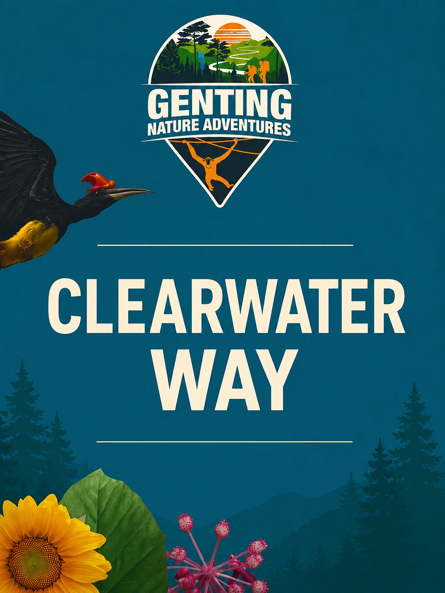

A quick look at the trail; watch the preview, then check the route below.

Guests are guaranteed to reach Lost Falls as part of every trail experience. However, continuing on to Fishtail Falls is subject to prevailing weather and climate conditions on the day. For visitor safety, our rangers reserve the right to end the trail at Lost Falls and not proceed to Fishtail Falls if conditions are deemed unsafe.